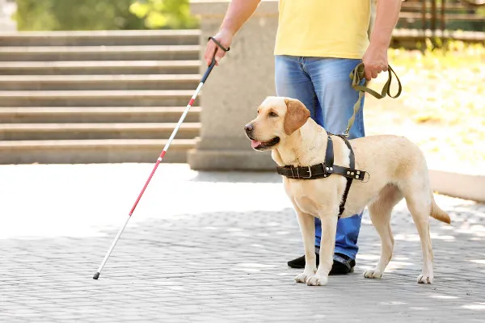
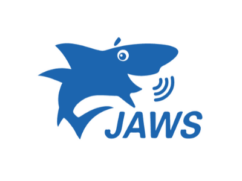

A cegueira é uma das condições que mais afetam a autonomia e a qualidade de vida de milhões de pessoas ao redor do planeta. Segundo estimativas da Organização Mundial da Saúde (OMS), dezenas de milhões de pessoas vivem com cegueira total, e centenas de milhões enfrentam algum grau de deficiência visual moderada a grave. Compreender essa realidade — suas causas, seus desafios e os avanços tecnológicos que vêm transformando a vida de pessoas cegas — é essencial para construirmos uma sociedade mais inclusiva.

A cegueira no mundo
No cenário global, a cegueira está diretamente ligada a fatores como acesso à saúde, condições socioeconômicas e prevenção de doenças oculares. As principais causas incluem catarata não tratada, glaucoma, degeneração macular relacionada à idade, retinopatia diabética e erros refrativos não corrigidos. Um dado alarmante é que grande parte dos casos de cegueira no mundo poderia ser evitada ou tratada, caso houvesse acesso adequado a cuidados oftalmológicos, especialmente em países de baixa e média renda. Nos países desenvolvidos, o investimento em saúde pública, tecnologia assistiva e políticas de inclusão tem reduzido significativamente o impacto da deficiência visual na vida das pessoas. Já em regiões mais pobres da África, Ásia e América Latina, a falta de acesso a cirurgias simples, como a de catarata, ainda é uma das principais causas de cegueira evitável.
Não é bem uma extensão de navegador, mas um leitor de tela gratuito e de código aberto para Windows. É um dos mais usados no mundo todo, funciona muito bem com Chrome e Firefox.
Abrir
O leitor de tela mais tradicional e robusto para Windows, bastante usado em ambientes corporativos e educacionais. É pago, mas tem uma versão gratuita limitada (40 minutos por sessão).
AbrirLeitor de tela nativo do Windows, já vem instalado no sistema (não precisa baixar nada separado). É bem usado por ser gratuito e integrado, funcionando com Edge e outros navegadores.
AbrirExtensão de leitor de tela feita pelo próprio Google para o navegador Chrome. É mais leve que NVDA/JAWS e pensada especificamente para uso dentro do navegador.
AbrirO Braille foi criado por Louis Braille, um francês que ficou cego ainda criança após um acidente na oficina do pai. Mesmo cego, ele conseguiu estudar em uma escola especializada em Paris, onde percebeu que os métodos de leitura para pessoas cegas da época eram lentos e limitados.
Inspirado em um sistema militar de pontos em relevo usado por soldados para escrever no escuro, Louis simplificou a ideia e criou, aos 15 anos, um sistema baseado em uma célula de 6 pontos, capaz de representar todas as letras do alfabeto, números e sinais de pontuação.
O sistema foi oficialmente adotado na França em 1854, dois anos após a morte de Louis Braille, e hoje é usado em praticamente todos os idiomas do mundo, incluindo o português.
Abaixo está a representação de cada letra em Braille:
| Letra | Braille | Letra | Braille | Letra | Braille | Letra | Braille |
|---|---|---|---|---|---|---|---|
| A | ⠁ | H | ⠓ | O | ⠕ | V | ⠧ |
| B | ⠃ | I | ⠊ | P | ⠏ | W | ⠺ |
| C | ⠉ | J | ⠚ | Q | ⠟ | X | ⠭ |
| D | ⠙ | K | ⠅ | R | ⠗ | Y | ⠽ |
| E | ⠑ | L | ⠇ | S | ⠎ | Z | ⠵ |
| F | ⠋ | M | ⠍ | T | ⠞ | ||
| G | ⠛ | N | ⠝ | U | ⠥ |
No Brasil, a principal lei que protege pessoas cegas e com deficiência é a Lei Brasileira de Inclusão (Lei nº 13.146/2015), também chamada de Estatuto da Pessoa com Deficiência. Ela garante direitos como acessibilidade em espaços públicos, educação inclusiva, prioridade em atendimentos e adaptações no ambiente de trabalho.
No plano internacional, a Convenção da ONU sobre os Direitos das Pessoas com Deficiência, ratificada pelo Brasil em 2008, foi a primeira convenção de direitos humanos incorporada à Constituição brasileira com status de emenda constitucional.
Já no meio digital, as diretrizes internacionais chamadas WCAG (Web Content Accessibility Guidelines) definem boas práticas para tornar sites acessíveis a pessoas cegas e com baixa visão, servindo de base para leis de acessibilidade digital em vários países.
No Brasil, diversas organizações oferecem suporte gratuito ou de baixo custo a pessoas cegas e com baixa visão, incluindo reabilitação, educação especializada, produção de materiais em Braille e orientação às famílias. Conheça algumas das principais:
Uma das maiores referências do país na produção e distribuição gratuita de livros em Braille, áudio e formato digital acessível. Também oferece reabilitação, educação especial e apoio à empregabilidade.
fundacaodorina.org.br →Órgão federal ligado ao Ministério da Educação, é o centro de referência nacional em deficiência visual. Mantém escola própria, gráfica em Braille e cursos de formação continuada.
gov.br/ibc →Associação especializada em baixa visão e apoio a crianças e jovens com deficiência visual ou múltipla. Oferece avaliação oftalmológica, intervenção precoce e desenvolvimento de tecnologia assistiva.
laramara.org.br →A maioria dessas instituições depende de doações, voluntariado e leis de incentivo fiscal (como abatimento de Imposto de Renda) para manter seus serviços gratuitos. Vale visitar o site de cada uma para ver as formas atuais de contribuição.